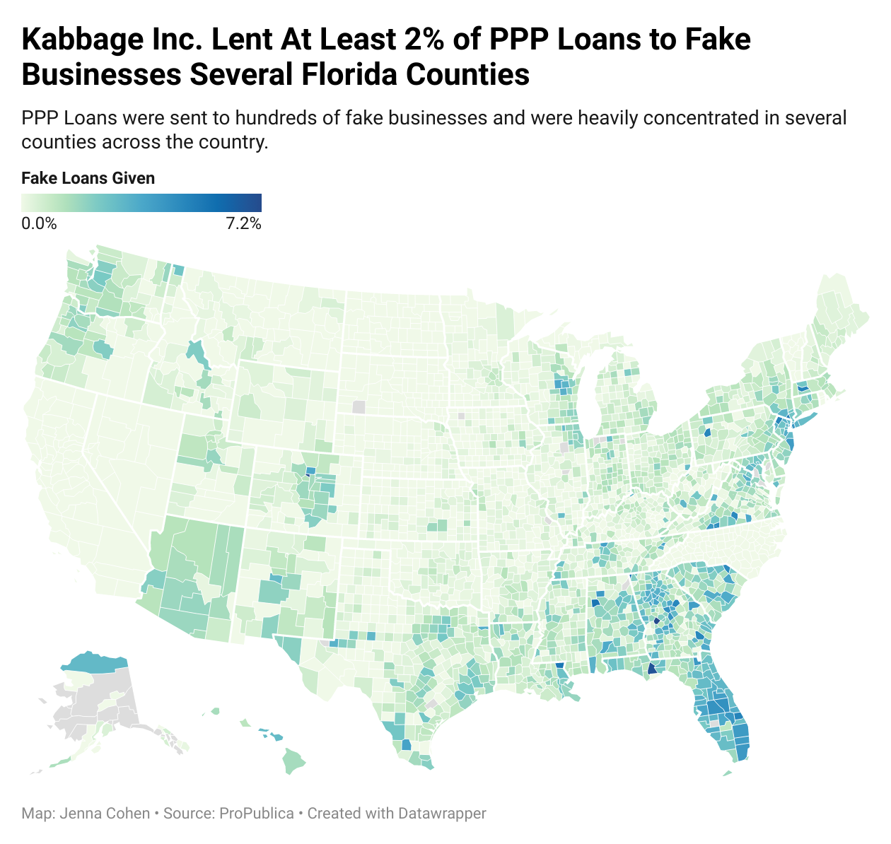
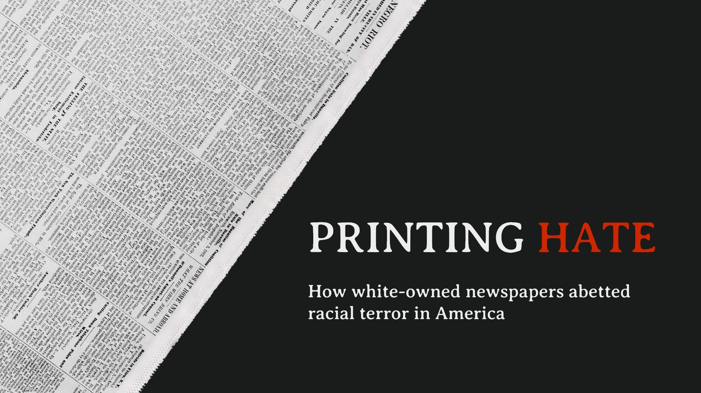
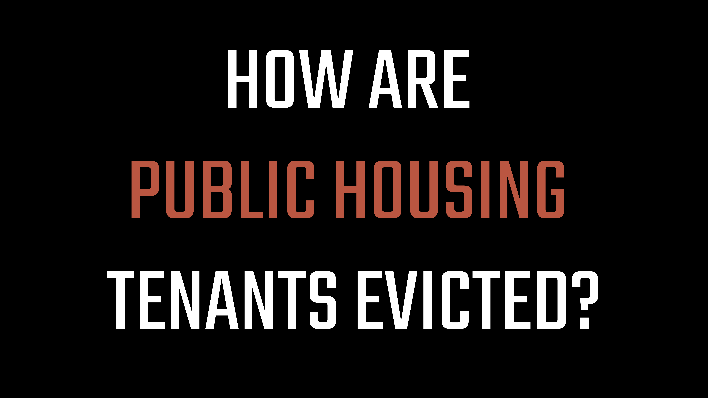
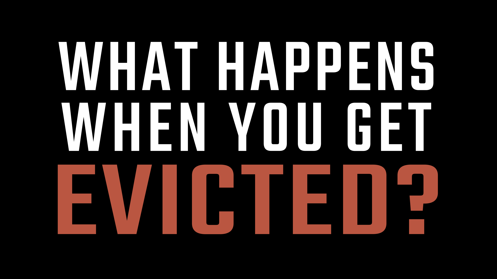

Hi! I’m Jenna, a DMV transplant (Jersey girl at heart) who believes visual journalism is the future of the
industry.
I specialize in web design and graphics – I even made this website! I'm also a dark mode
devotee, but if light mode is more your thing, click here.
I’ve contributed to the website and graphics development for the Nowhere To Go and Printing
Hate
investigations completed by The
Howard Center for Investigative Journalism and CNS Maryland.
Samples of my work can be found below.
I've also worked as
a designer for several organizations and am a co-founder of Zivvy
Media, a startup highlighting young voices discussing global issues. My full work experience can be
found in my resume.

ELAINE MASSACRE MINI DOCUMENTARY
I worked with Nick McMillan to develop this mini documentary on the
Elaine Massacre.
Accompanied with the article, the documentary explains the economic motives behind this massacre and how
white-owned newspapers fueled the violence. We combined archives, custom illustrations, interviews, data
visualizations, and motion graphics to tell this story.
Awards: BEA Festival of Media Arts Award
of Excellence
💻 After Effects, Premiere, Illustrator, Photoshop, Procreate, Carto,
Script
development

DATA VISUALIZATIONS
I've created a variety of data visualizations for work, school, and
personal practice. I've been able to improve my data analysis skills by working in R, cleaning data, and
crafting visuals to better understand the story the data was telling after taking Derek Willis'
data
journalism class.
💻 R, Tidyverse, Tidycensus, ggplot, Datawrapper
GOUCHER POLL QUIZ
The Goucher College Poll focuses on the opinions of Maryland residents,
and our team
at
CNS created an interactive quiz to tell the story on the findings. I created the digital illustrations to
accompany each question.
💻 Illustrator, Photoshop, Procreate

PRINTING HATE WEBSITE
Printing Hate is an investigation into how white-owned newspapers have
aided and
abetted
lynchings since 1865. In partnership with the Howard Center at the University of Maryland and five HBCUs, I
–
along with the design team – developed the site and project branding from scratch.
💻 HTML, CSS, Wordpress, XD, Illustrator, Photoshop

PUBLIC HOUSING MOTION GRAPHIC
I created this motion graphic to demonstrate how public housing tenants
are evicted.
As a
part of the public housing installment of Nowhere To Go, the graphic breaks down the public housing eviction
process in Minneapolis.
💻 After Effects, Premiere, Illustrator, Photoshop, Script development,
YouTube

EVICTIONS MOTION GRAPHIC
I created this motion graphic to demonstrate how a person can end up
evicted. As a
part
of the evictions installment of Nowhere To Go, the graphic breaks down the eviction process in Oklahoma, a
state
that did not ban evictions during the initial months of the pandemic.
💻 After Effects, Premiere, Illustrator, Photoshop, Script development,
YouTube

NOWHERE TO GO WEBSITE
Nowhere To Go is an investigation into the impact of homelessness and
the threat of
homelessness posed by the pandemic. In partnership with the Howard Center at the University of Maryland and
six
universities across America, our design team produced stories and data visualizations for the site.
💻 HTML, CSS, Wordpress, XD, Photoshop, Datawrapper